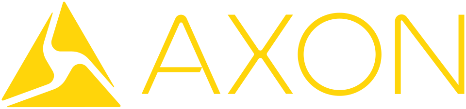

Axon Enterprise
Axon Enterprise는 군대와 법집행기관, 민간인을 대상으로 전기충격 무기와 카메라, 디지털 증거 관리 기술을 개발하는 미국 기업이다.
최종 업데이트

Axon Enterprise는 어떤 브랜드인가
Axon Enterprise는 스코츠데일에 기반을 두고 무기와 법집행 기술 제품을 개발한다. 초기 핵심 제품은 전기충격 무기 제품군인 Taser이다.
이후 보디캠, 차량용 카메라, 컴퓨터 지원 출동 소프트웨어와 클라우드 기반 디지털 증거 플랫폼으로 사업을 확대했다. 2017년 기준 보디캠과 관련 서비스는 전체 사업의 4분의 1을 구성했다.
회사는 제품 관련 사망과 합의금 지급 논란에도 전기충격 무기 시장에서 지배적인 위치를 유지했다.
Axon Enterprise는 어떻게 시작되고 성장했나
Rick Smith와 Tom Smith는 1993년 Jack Cover와 함께 압축 질소를 추진제로 사용하는 장치를 설계하기 위해 AIR TASER, Inc.를 설립했다. 회사는 1997년 Auto Taser 등 다른 제품을 판매하다 거의 파산할 위기를 겪은 뒤 TASER International로 사명을 바꾸고 1999년 TASER M26을 출시했다.
2001년 $6.8 million의 적자를 안고 기업공개를 진행했으며 최초 종목 기호는 TASR이었다. 경찰관이 다른 경찰관을 교육하도록 비용을 지급하는 마케팅을 통해 순매출을 2003년 $24.5 million, 2004년 거의 $68 million으로 확대했다.
Axon Enterprise의 브랜드 아이덴티티는 무엇인가
전기충격 무기에서 출발해 보디캠과 클라우드 기반 디지털 증거 관리까지 결합한 법집행 기술 구성이 구별점이다.
Axon Enterprise의 대표 제품과 서비스는 무엇인가
회사는 초기 제품인 Taser 전기충격 무기 제품군을 군대와 법집행기관, 민간인에게 제공한다. 2005년에는 안전장치 해제 시 자동으로 작동하는 손잡이 장착형 카메라 TASER Cam을 선보였으며 2010년 10월까지 최소 45,000대를 판매했다.
2008년에는 머리에 장착하는 첫 보디캠 Axon Pro와 촬영 영상을 온라인에 저장하는 Evidence.com을 공개했다. 이후 차량용 카메라, 컴퓨터 지원 출동 소프트웨어, 디지털 증거 관리와 분석 기술로 사업을 확장했다.
Axon Enterprise는 지금 어떤 상태인가
회사는 TASER International에서 Axon Enterprise로 이름을 변경했으며 스코츠데일에 본사를 둔 미국 기업이다. 2013년 시애틀에 사무소를 열고 2014년 5월 암스테르담에 해외 사무소를 열었다.
2015년에는 보디캠, 디지털 증거 관리와 분석 사업을 포괄하는 Axon 부문을 시애틀에 설립했다.
Axon Enterprise 로고는 어떻게 변해왔나
자주 묻는 질문
Axon Enterprise는 어느 나라 브랜드인가요?
Axon Enterprise는 미국의 에너지·산업재 브랜드입니다.
Axon Enterprise는 언제 설립되었나요?
Axon Enterprise는 1993년 설립되었습니다.
Axon Enterprise의 브랜드 아이덴티티는 무엇인가요?
전기충격 무기에서 출발해 보디캠과 클라우드 기반 디지털 증거 관리까지 결합한 법집행 기술 구성이 구별점이다.
Axon Enterprise의 대표 제품은 무엇인가요?
회사는 초기 제품인 Taser 전기충격 무기 제품군을 군대와 법집행기관, 민간인에게 제공한다.
Axon Enterprise는 현재 어떤 상태인가요?
회사는 TASER International에서 Axon Enterprise로 이름을 변경했으며 스코츠데일에 본사를 둔 미국 기업이다.
Axon Enterprise의 본사는 어디에 있나요?
Axon Enterprise의 본사는 스코츠데일에 있습니다(위키데이터 기준).
Axon Enterprise의 공식 웹사이트는 어디인가요?
Axon Enterprise의 공식 웹사이트는 https://global.axon.com/ 입니다.
출처와 검증
Axon Enterprise 관련 참고: 공식 웹사이트 · 위키데이터 Q690604 · 영어 위키백과. 브랜드명은 한글과 원어를 함께 표기하되 데이터에 없는 표기는 만들지 않습니다. 기원 국가·설립연도는 검수된 정의문에서 확인된 값을 우선하고, 없을 때만 공식 웹사이트 URL이 일치하는 위키데이터 개체의 값을 씁니다. 위키데이터 값은 2026-09-12 기준입니다.